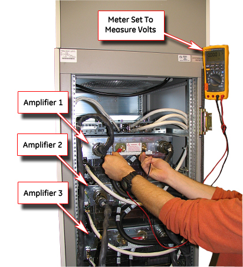
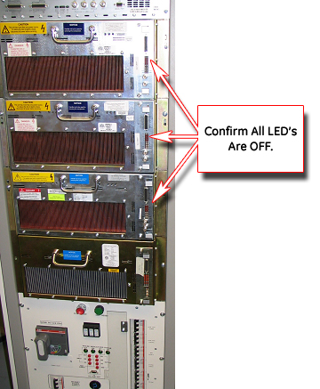
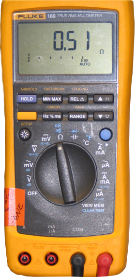
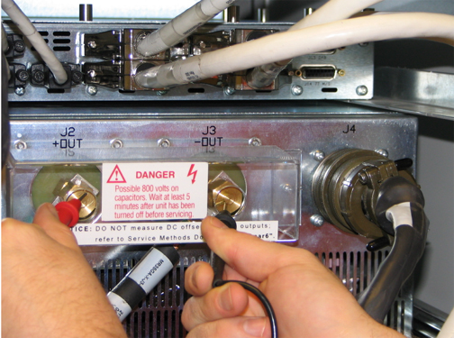
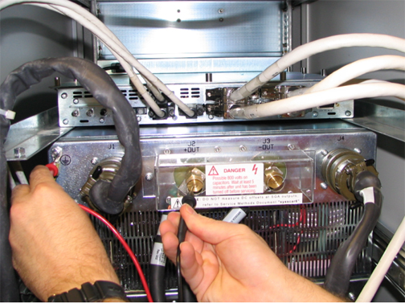
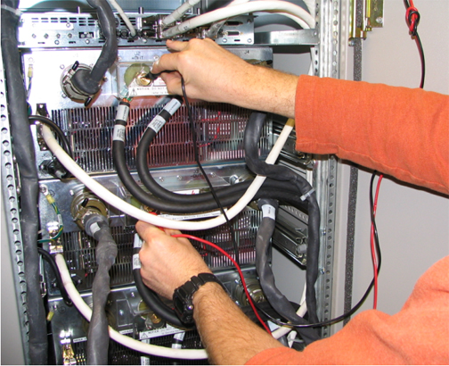

Operating Documentation
Direction 5133330-3, Rev# 14
Signa EXCITE HD 3.0T Service Methods
Module Version 1.0, Version Date 4/25/07
Operating Documentation |
| Required Persons | Preliminary Reqs | Procedure | Finalization |
|---|---|---|---|
| 1 |
This procedure measures the continuity, or impedance, of the load, or the output of the gradient driver subsystem components. The epoxy-filled gradient coil is the load for the gradient driver subsystem. However, between the output of that subsystem and the epoxy-filled gradient coil are interface panels, a gradient filter on the penetration panel, and a terminal strip at the rear of the magnet. This procedure can be used with all of the Signa product options. However, since hardware configuration varies from product to product, verify that the system is the same as the reference section to ensure that the correct procedure is being referred to. It is useful to reference the Block Diagrams for complete signal path information.
| Last Update | 01/16/2006 |
| Item | Qty | Effectivity | Part# | Manufacturer | |
|---|---|---|---|---|---|
| DMM (Digital Multi Meter) | 1 | - | - | - | |
| ||||
| FATAL ELECTRIC SHOCK HAZARD!! | ||||
| THE Gradient AMPLIFIERS ACT AS CONSTANT LOAD SOURCES AND WILL SEND MAXIMUM CURRENT TO ANY LOAD (INCLUDING YOU!). | ||||
| TO PREVENT FATAL ELECTRIC SHOCK, ENSURE THAT THE POWER IS OFF BEFORE CONTINUING WITH THIS PROCEDURE. |
| Condition | Reference | Effectivity |
|---|---|---|
- | - |
Shutdown the operating software and then power at the Host Computer.
Shut down power to the system at the Main Disconnect Unit (MDU) and then securing the MDU circuit breaker for the entire system (except the Compressor) with the lock out tag out devices.
| NOTE: | Ensure that the power supply to the Compressor and the Magmon is NOT in the off position. |
Verify that all power has dissipated by measuring incoming power to the ACGD / HFD Power Supply by waiting for more than 5 minutes after doing the LOTO process and measuring the VOLTAGES between the terminals in all the 3 subsystems as shown in Illustration 1. The voltages there should read 0 Volts.
Illustration 1: Measurement Of Voltages Between The Points Shown

Also confirm that the LEDs in the front are not lit up as shown in Illustration 2.
Illustration 2: All LEDs On The Amplifiers Should Be OFF

Switch the Multi meter to the ohms position as shown in Illustration 3.
Illustration 3: Multimeter In The Ohms Position

Short the two leads to ensure that the multimeter (in the ohms mode) reads zero ohms. If it reads some minor resistance (say > 0.5 ohms), take note of it in the future measurements.
Measure the resistance between the two terminals as shown in Illustration 4. Do the measurements for all the 3 driver amplifier. It should read less than 1ohm. (Remember to take into consideration the zero adjustment described in the previous step).
Illustration 4: Resistance Measurement Between The Two Output Terminals Of The Gradient Driver Subsystem

Measure the resistance between the stud and the ground as shown in Illustration 5. It should be greater than 10K ohms (<10,000 ohms)
Illustration 5: Resistance Measurement Between The Studs And The Ground

Continue the resistance measurement procedure for all the 6 studs in the 3 driver subsystems. It must be greater than 10,000 ohms (< 10,000 ohms).
Measure the resistance between the stud of one subsystem and each of the others as shown in Illustration 6. Again, it must be greater than 10K ohms (<10,000 ohms).
Illustration 6: Measure The Resistance Between Amplifiers

If any of the measurements were not in spec, then do the tests after removing the gradient cables.
If the problem still persists, replace that component or module.
To restore the system to specifications, follow the steps found in the Finalization section.
Ensure that all connections are tight.
Measure for open circuit load and short to ground. The Field Engineer will disconnect load cables at measurement points as he continues to isolate opens and shorts.
Enable power at the PDU by removing the lock out tag out devices.
Apply power to the Gradient Cabinet.
Replace all the covers on the cabinets.
Perform a body or head scan to ensure system functionality.